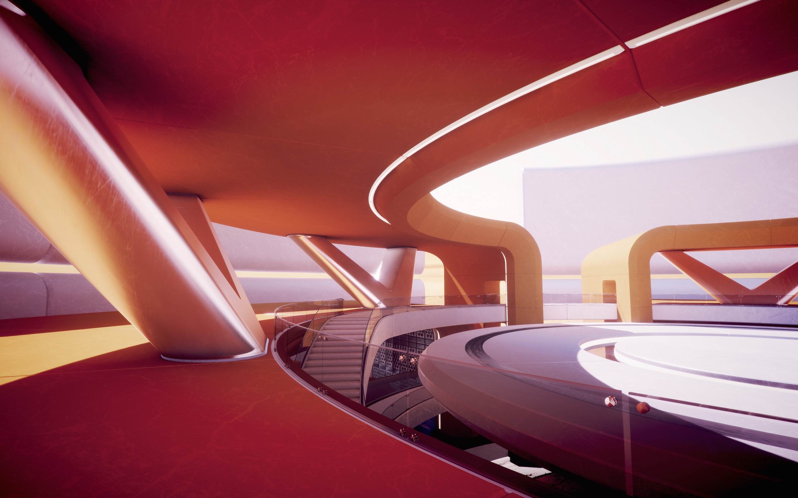

Global Illumination
Global Illumination (GI) is a system that models how light is bounced off of surfaces onto other surfaces (indirect light) rather than being limited to just the light that hits a surface directly from a light source (direct light). Modelling indirect lighting allows for effects that make the virtual world seem more realistic and connected, since objects affect each other’s appearance. One classic example is ‘color bleeding’ where, for example, sunlight hitting a red sofa will cause red light to be bounced onto the wall behind it. Another is when sunlight hits the floor at the opening of a cave and bounces around inside so the inner parts of the cave are illuminated too.
 Global illumination in the Scene View. Note the subtle effect of indirect lighting.
GI concepts
Traditionally, video games and other realtime graphics applications have been limited to direct lighting, while the calculations required for indirect lighting were too slow so they could only be used in non-realtime situations such as CG animated films. A way for games to work around this limitation is to calculate indirect light only for objects and surfaces that are known ahead of time to not move around (that are static). That way the slow computation can be done ahead of time, but since the objects don’t move, the indirect light that is pre-calculated this way will still be correct at runtime. Unity supports this technique, called Baked GI (also known as Baked Lightmaps), which is named after "the bake" - the process in which the indirect light is precalculated and stored (baked). In addition to indirect light, Baked GI also takes advantage of the greater computation time available to generate more realistic soft shadows from area lights and indirect light than what can normally be achieved with realtime techniques.
Additionally, Unity 5.0 adds support for a new technique called Precomputed Realtime GI. It still requires a precomputation phase similar to the bake mentioned above, and it is still limited to static objects. However it doesn’t just precompute how light bounces in the scene at the time it is built, but rather it precomputes all possible light bounces and encodes this information for use at runtime. So essentially for all static objects it answers the question "if any light hits this surface, where does it bounce to?" Unity then saves this information about which paths light can propagate by for later use. The final lighting is done at runtime by feeding the actual lights present into these previously computed light propagation paths.
This means that the number and type of lights, their position, direction and other properties can all be changed and the indirect lighting will update accordingly. Similarly it’s also possible to change material properties of objects, such as their color, how much light they absorb or how much light they emit themselves.
While Precomputed Realtime GI also results in soft shadows, they will typically have to be more coarse-grained than what can be achieved with Baked GI unless the scene is very small. Also note that while Precomputed Realtime GI does the final lighting at runtime, it does so iteratively over several frames, so if a big a change is done in the lighting, it will take more frames for it to fully take effect. And while this is fast enough for realtime applications, if the target platform has very constrained resources it may be better to to use Baked GI for better runtime performance.
Limitations of GI
Both Baked GI and Precomputed Realtime GI have the limitation that only static objects can be included in the bake/precomputation - so moving objects cannot bounce light onto other objects and vice versa. However they can still pick up bounce light from static objects using Light Probes. Light Probes are positions in the scene where the light is measured (probed) during the bake/precomputation, and then at runtime the indirect light that hits non-static objects is approximated using the values from the probes that the object is closest to at any given moment. So for example a red ball that rolls up next to a white wall would not bleed its color onto the wall, but a white ball next to a red wall could pick up a red color bleed from the wall via the light probes.
Examples of GI effects
Changing the direction and color of a directional light to simulate the effect of the sun moving across the sky. By modifying the skybox along with the directional light it is possible to create a realistic time-of-day effect that is updated at runtime. (In fact the new built-in procedural skybox makes it easy to do this).
As the day progresses the sunlight streaming in through a window moves across the floor, and this light is realistically bounced around the room and onto the ceiling. When the sunlight reaches a red sofa, the red light is bounced onto the wall behind it. Changing the color of the sofa from red to green will result in the color bleed on the wall behind it turning from red to green too.
Animating the emissiveness of a neon sign’s material so it starts glowing onto its surroundings when it is turned on.
The following sections go into detail about how to use this feature.